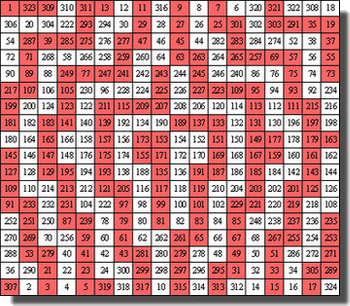
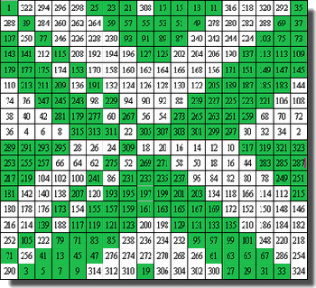

Le carré du soleil et ses descendants
Ce carré possède aussi deux axes de symétrie perpendiculaires ayant comme intersection ledit centre théorique. Voici comment s'ordonnent concrètement ces nombres :
Examinons donc maintenant le carré de dimension immédiatement supérieure : 10. Le constat est immédiat : ce qui était vrai du carré de 6 devient insuffisant pour celui-ci. En effet que faire des nombres qui ne sont pas les sommets des deux triangles ?
Les diagonales principales restant en place, dans chaque quadrant, on garde, pour constituer les les deux triangles, un sommet qui est un des coins du quadrant n'appartenant pas à la diagonale principale. On prendra ensuite, les nombres figurant sur le côté opposé...
Méthode complète et conventions d'écriture
Tr1 : triangle pointe en haut
Tr2 : triangle pointe en bas
QC1 : Quadrilatère(s) croisé(s) petite "base" en haut
QC2 : Quadrilatère(s) croisé(s) petite "base" en bas
|
Tr1 : Sym Vert. Tr2 : Sym Horiz. QC1 : : Sym Vert. QC2 : : Sym Horiz. |
Tr1 : Sym /Centre. Tr2 : Sym /Horiz. QC1 : : Sym /Vert. QC2 : Sym /Horiz. |
|
Tr1 : Sym Centre Tr2 : Sym Horiz. QC1 : Sym Vert. QC2 : Sym Horiz. |
Tr1 : Sym Centre Tr2 : Sym Centre QC1 : Sym Vert. QC2 : Sym Horiz. |
L'histoire pourrait s'arrêter là, mais il y a quelques expérimentations auxquelles le lecteur de cette page peut se livrer :
- Chercher des modes de remplissage du carré de base autres que l'écriture des nombres de 1 à n2 dans l'ordre croissant et vérifier que, parfois, le carré obtenu après application de la méthode de construction reste magique.
Ainsi on peut choisir d'inscrire tous les nombres impairs dans la moitié supérieure et tous les nombres pairs ensuite. Mais le remplissage pairs/impairs par quadrants donne un carré presque magique... - Examiner la répartition pairs/impairs dans le carré obtenu. Voici ce que donnent pour n = 18 les deux modes ci-dessus :


Cette méthode de calcul (affichage en mode texte) a été automatisée via un programme écrit avec le langage de programmation Python. Pour consulter le code cliquer ici.